Скриншоты Frappe Learning 2.64.0 от 8 октября 2026 года. Штатный UI сохранён. Тест 75%, домашнее задание ожидает проверки, Pass преподавателя открывает следующий урок. Итог: ученик 1 — 100%, ученик 2 — 0%.
http://over-u.localhost:8000/lms/courses
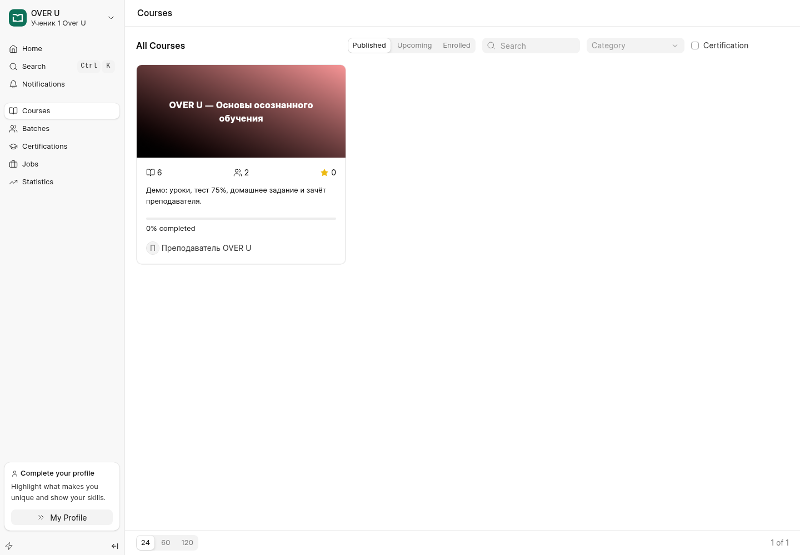
http://over-u.localhost:8000/lms/courses/over-u/learn/1-1
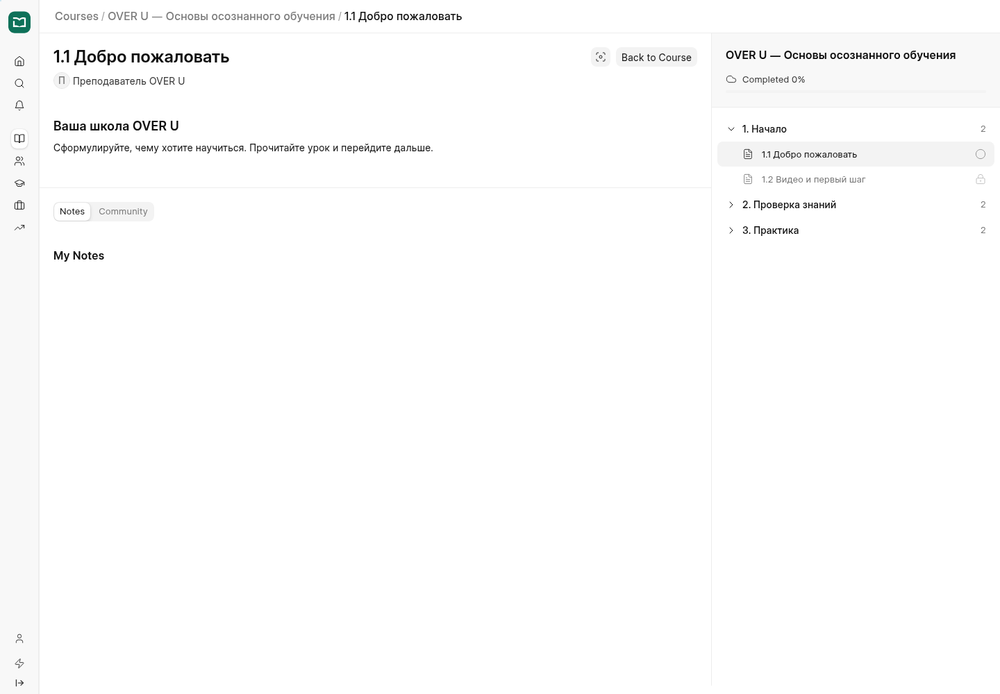
http://over-u.localhost:8000/lms/courses/over-u/learn/1-2
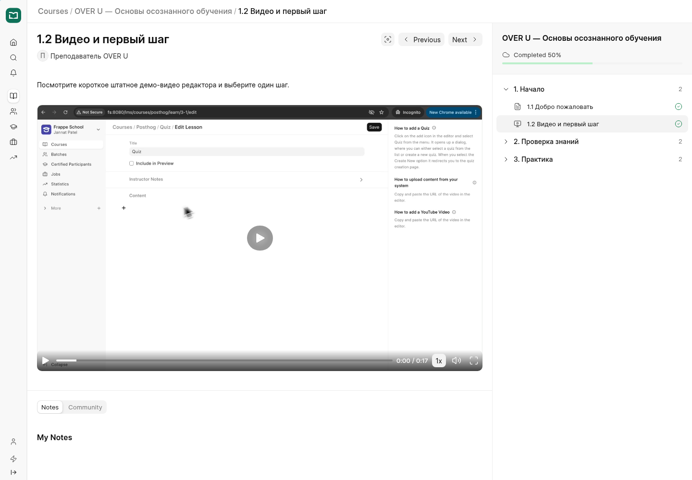
http://over-u.localhost:8000/lms/courses/over-u/learn/2-2
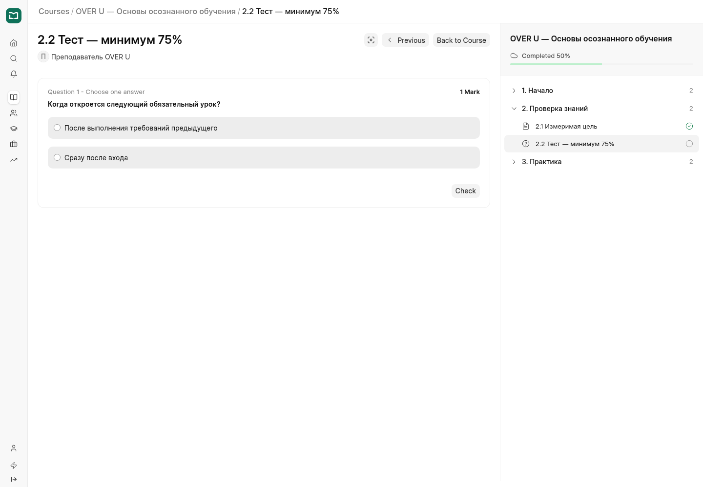
http://over-u.localhost:8000/lms/courses/over-u/learn/2-2
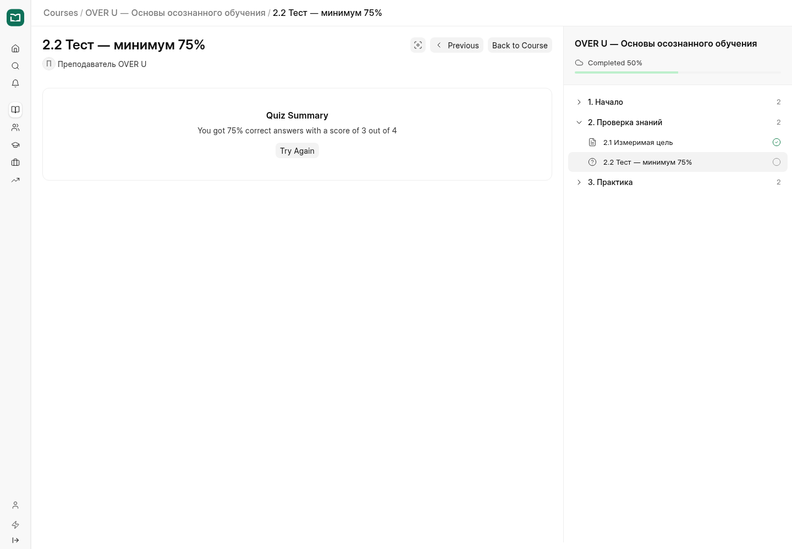
http://over-u.localhost:8000/lms/courses/over-u/learn/3-1
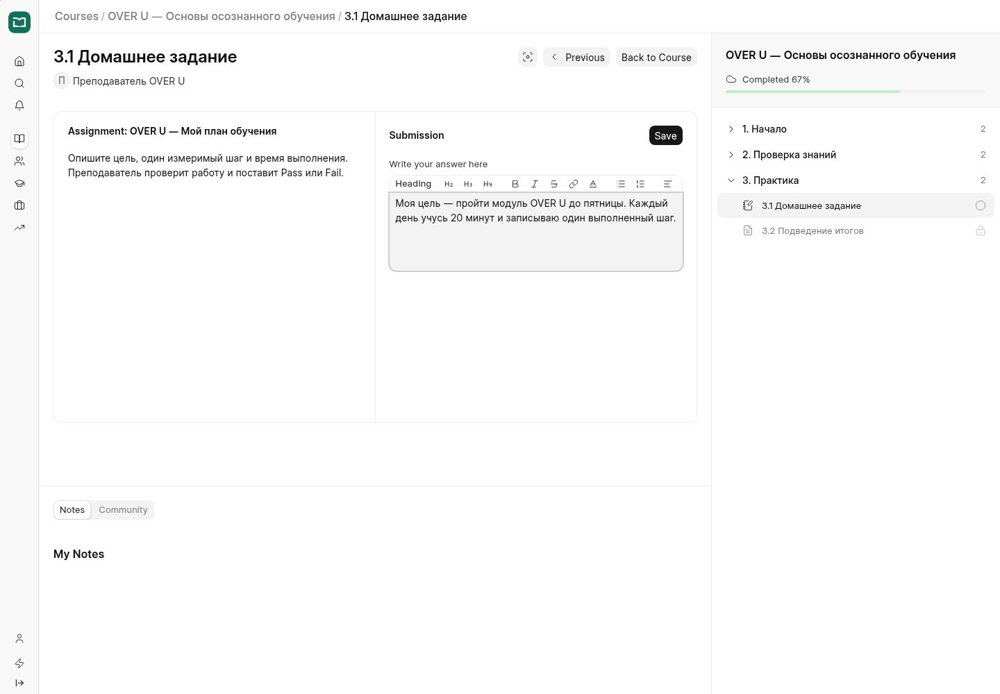
http://over-u.localhost:8000/lms/assignment-submission/ASG-00005/ASG-SUB-00015
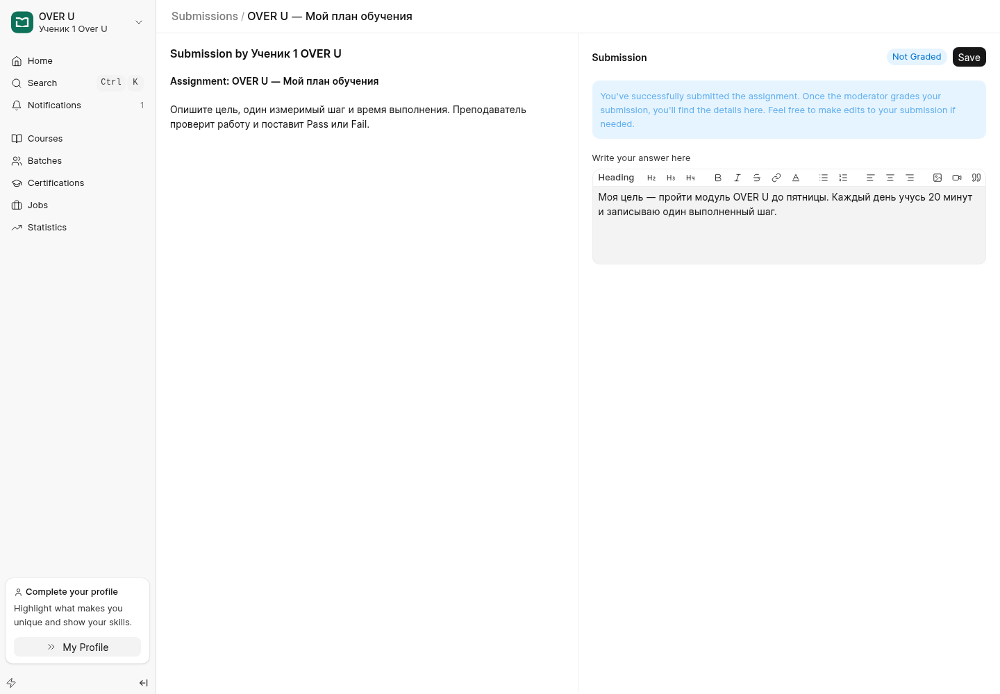
http://over-u.localhost:8000/lms/courses/over-u#dashboard
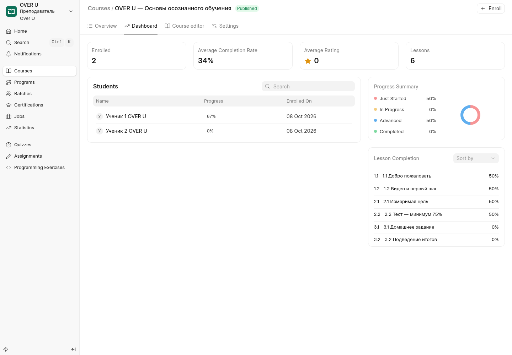
http://over-u.localhost:8000/lms/courses/over-u?editLesson=1-1#editor
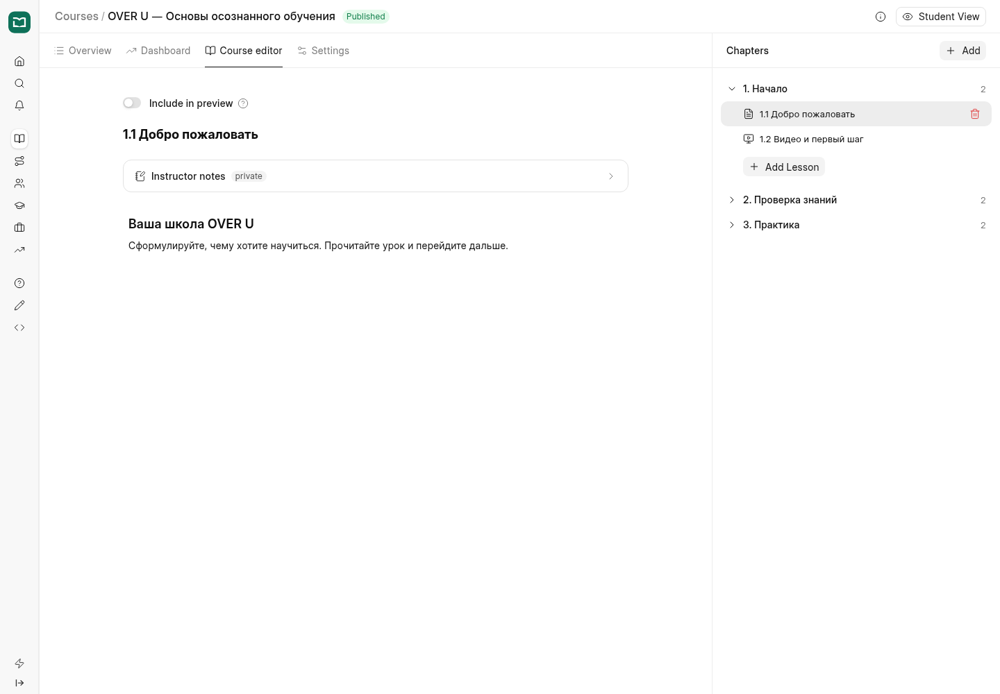
http://over-u.localhost:8000/lms/assignment-submissions
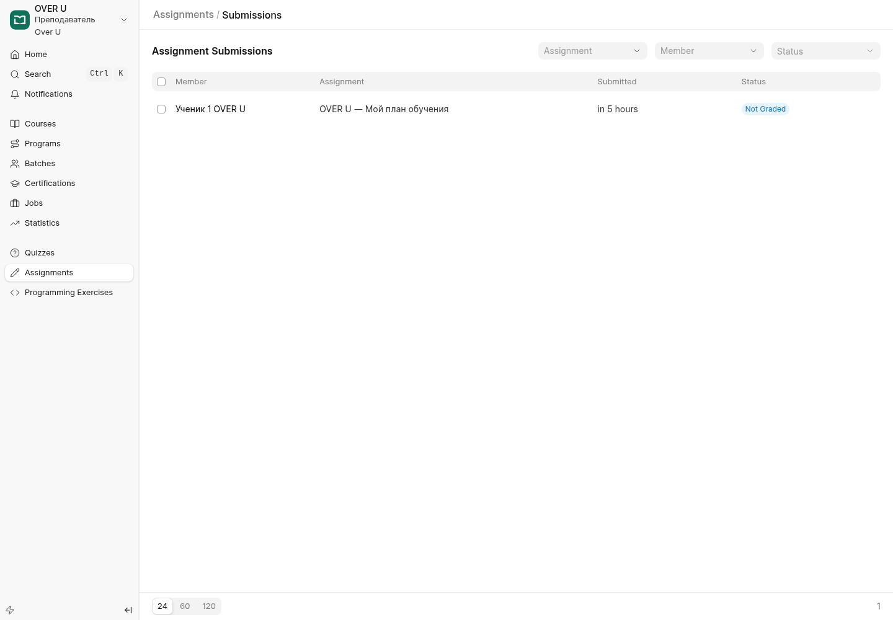
http://over-u.localhost:8000/lms/assignment-submission/ASG-00005/ASG-SUB-00015
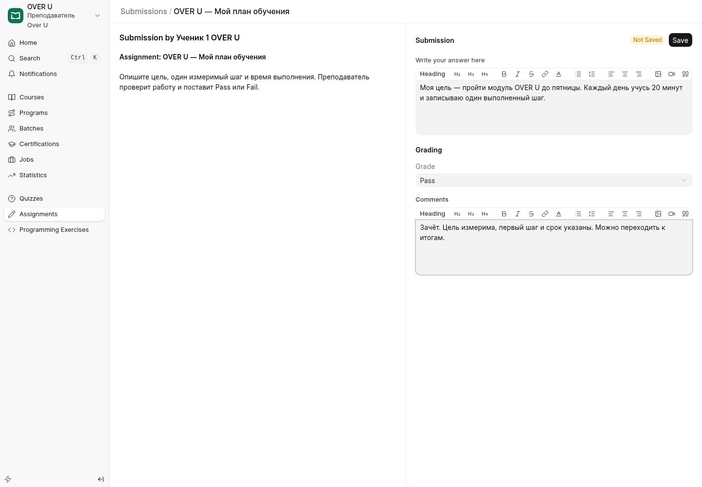
http://over-u.localhost:8000/lms/assignment-submission/ASG-00005/ASG-SUB-00015
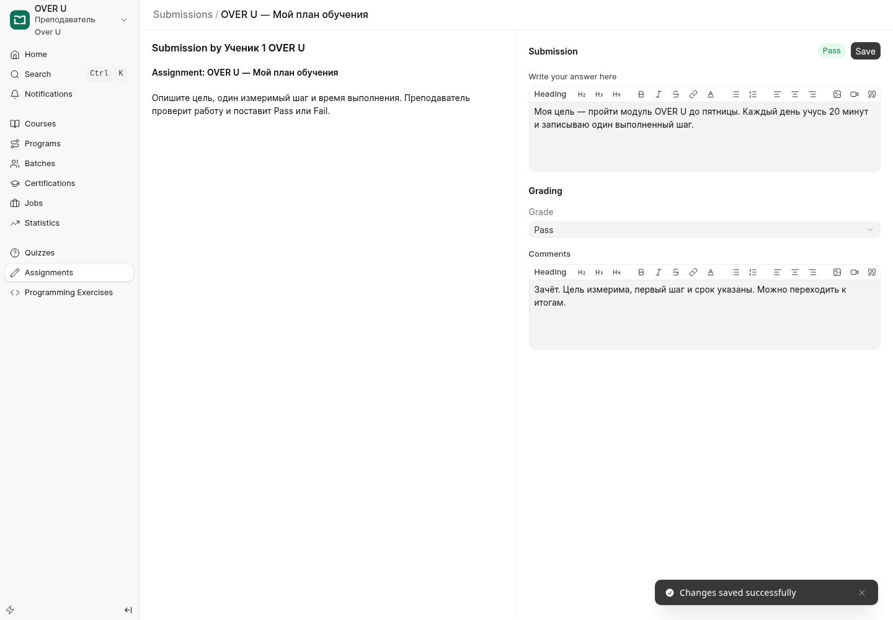
http://over-u.localhost:8000/lms/courses/over-u/learn/3-2
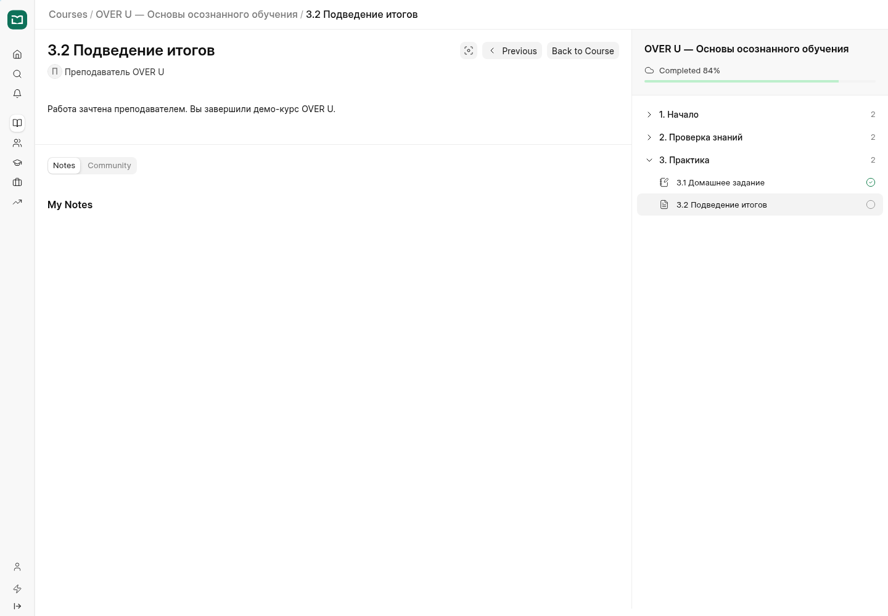
http://over-u.localhost:8000/lms/courses
http://over-u.localhost:8000/lms/courses
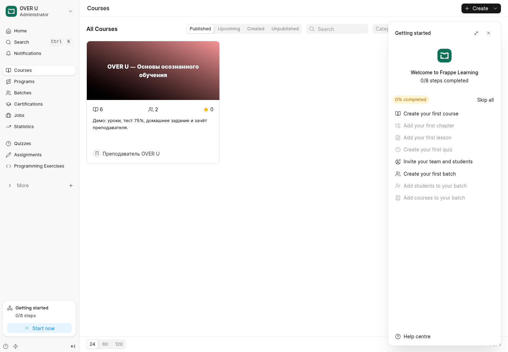